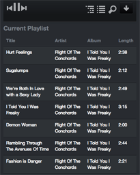

Pi MusicBox
Operate Spotify from your couch with this ready to eat Music Box software for the Raspberry Pi.
A lot of people have
problems getting the Pi to work as a Spotify-player. This bootable image makes it a lot
easier. As a bonus, it includes AirTunes support.
Features
-
Working Spotify server based on Mopidy, to use with a nice
browser-interface, or with an MPD-client
-
AirTunes streaming
-
No need for tinkering, no need to setup things in the Linux
commandline
-
USB Audio support (Soundcard, speakers, headphones). The analog port
works very well, but with an external USB soundcard it's of better
quality.
-
Wifi support (WPA, if the kernel supports your wifi-adapter)
-
It's also a great way to get started with tinkering. It can e.g. be modified to play local music-files, but it's not enabled at the moment.
Requirements
-
Working Raspberry Pi
-
Speakers/amplifier
-
SD Card, 2GB minimum (tested on a 4GB model. It can probably run on a
1GB, but then you need to resize the partitions)
-
Computer with a modern browser; tablet or phone. The webinterface is tested with
recent versions of Firefox, Chrome and iOS (iPad/iPhone). It could also work with IE10
and other modern mobile browsers (Chrome Mobile, Firefox Mobile). You can also use an
MPD client to connect.
-
Spotify Premium account for streaming.
Alpha
Please regard this image as alpha-quality. It's quite stable, but
don't cry if things go wrong...
Instructions
-
Download the image
here. It's around 1G in (compressed) size; 4G uncompressed.
-
Extract the zip-file. Put the resulting image on your SD Card by following these
instuctions. The image is for a 4GB card, but you can put it on a
2GB one, using
dd
in OS X/Linux. It gives an error because
the image is too big, but that's no problem because it's empty space.
-
If you're on Windows, download an editor which supports Unix editing.
E.g. Notepad2
or Notepad++
. Users of Os X and Linux can edit the file directly.
-
Open the contents of the 'config' folder of SD Card in your
Finder/Explorer.
-
Add your credentials of your Spotify Premium account to the file
settings.py
,
using the text editor you downloaded.
-
Optional (if you have a Wifi-adapter): edit
wpa_supplicant.conf
for your Wifi
credentials if you want Wifi (WPA security only)
-
Put the card in the Pi
-
Connect cables (You don't have to connect a screen to the Pi if you
don't want to)
-
Turn on Pi
-
Wait for a while
-
Point your browser to the Pi. Depending on your network and computers,
you could try this address:
http://musicbox.local/
-
Most OS X/iOS devices probably will find it, but Windows machines
without iTunes installed, won't. If it doesn't work, you could try to
install Apple Bonjour (comes with iTunes) to make it work.
-
Otherwise try to find out the IP-address of your Pi and point the
browser to that address. The IP-address is printed on the screen when
MusicBox is started.
-
The service is announced as Avahi/Bonjour/Zeroconf, so you should be
able to find the ip/service via Safari or e.g. this
extension for Firefox
-
To use Wifi and USB-Audio you have to plugin the devices before you
start the Pi. Restart if you plug them in later.

SECURITY WARNING
This is system not secure at all. Don't run it outside a firewall!!
-
The Mopidy musicserver is not protected, and the Musicbox services are
run as root. Maybe this is better in the future, but not now. Sorry.
-
Also, the passwords of Spotify and wifi are stored in plain text on
the SD card.
-
You can SSH to the server with the root login and
the password musicbox.
Projects
Pi MusicBox is based on the following great projects (I just made it
easier to get it working):

-
Debian
-
Mopidy (+ my own Mopidy
Webclient)
-
Shairport
-
All the projects that are used to create the these projects
-
All the projects that are used to create the projects that are used
to create these projects
-
All the projects that ...
-
A lot of people giving solutions on forums...
-
And of course the work of the guys who brought you the Raspberry
Pi
Support
You could try the
#mopidy
channel on Freenode,
the Mopidy project, or the Raspberry
Pi forums.
Have fun!
-Wouter van Wijk (woutervanwijk _at_ g mail )